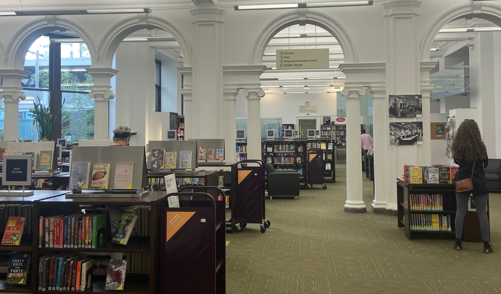
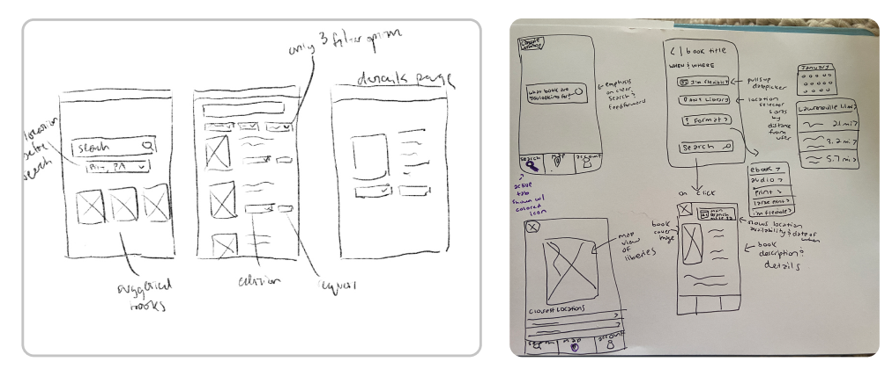
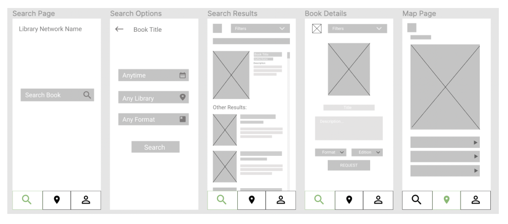
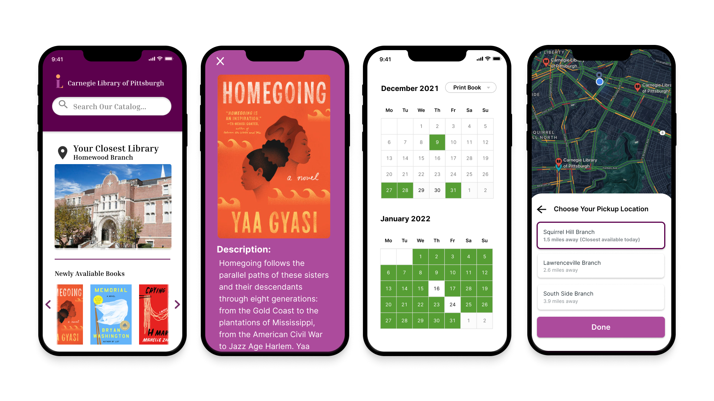
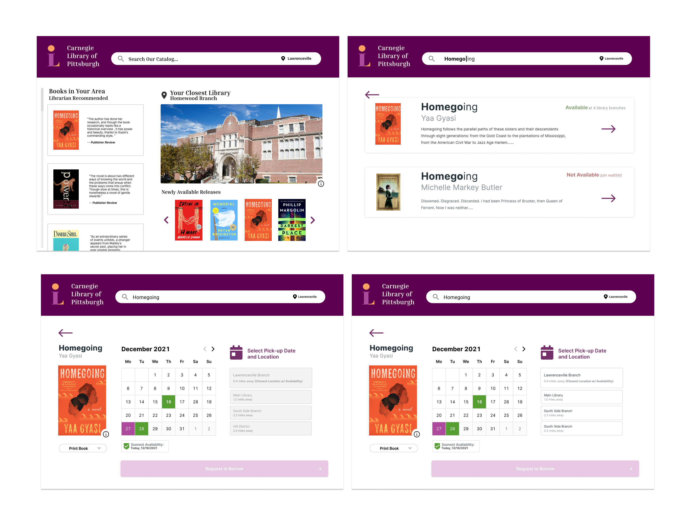
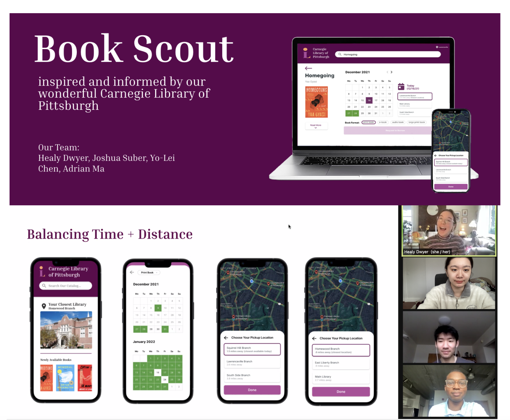

Project Overview
Book Scout is an eight-week project responsible for web design that aims to meet the guidelines for desktop and mobile devices. To ensure the design worked across multiple devices, my team implemented a mobile-first approach and remained aware of multi-modal interactions.
Our solution focused on balancing a user’s focus on when and where their book may be available. If they could get the book sooner, they might be willing to travel a bit further.
Problem Statement
Taking a mobile-first appraoch, How might we design a responsive website that allows users to locate avaliable books from a municipal library.
Domain Research
To understand the current state of locating available books, we felt it was important to analyze modern systems users employ to locate available library books. Competitors we considered were:
- Carnegie Library of Pittsburgh website
- Minuteman Library Network
- Other possible non-library competitors
- Barnes and Noble
- Amazon
We analyzed both their mobile and desktop versions and performed a heuristic evaluation on how well they comply with human-centered design patterns.
Sketches and Wireframe
We conducted two Think-Aloud sessions using our paper prototype. The sessions were conducted remotely, and participants were asked to verbalize both their thoughts as well as what they were viewing. Since this was remote, we needed the extra layer of description to minimize any ambiguity or assumptions on what the viewers were referencing.
From these sessions, we noticed that participants had clearly different preferences on the preferred ordering of the search experience. Some wanted to choose filters before they pressed search, while others wanted those options after choosing a book. It was clear that our placement of the filters between the search and results pages was disruptive, and that we needed to narrow down our target audience by choosing one ordering approach. The confusion many of our participants had with the map tab also made it apparent the map functionality needed to be better incorporated into the locating/search process.
Low-Fi and Mid-Fi Prototype
Following our Think-Aloud session and Low-Fi Prototype, we began developing an interactive Mid-Fi prototype that addressed many of the feedback and suggestions provided. To better showcase our design approach in a relevant context, we decided to use the Carnegie Library of Pittsburgh as our basis. This is not intended to be a redesign, but rather an example of how our design can be applied to a digital library service.
We learned Availability of a book is a major priority in whether a user decided to request a book. We also learned to iterate on our design to better emphasize our main innovative element.
Low-Fi and Mid-Fi Prototype
 Our solution focused on balancing a user’s focus on when and where their book may be available. If they could get the book sooner, they might be willing to travel a bit further. But if they could afford to wait they might elect to choose the library closest to them. We wanted to make these decisions easier to make. We also spoke on why investors should care, with this not only being an issue unique to the Carnegie Library but library systems all around the US. We believe our solution can be scaled to improve people’s experiences at all libraries, encouraging people to support locals by doing so!
Pitch
We introduced our audience to a scenario where a busy college student was looking for a book and needed to balance their schedule and transportation options. Users need to know how soon they can get the book and also where they would have to travel to get it. We also needed to set the expectations that this wasn’t a big box store, such as Amazon, where the book would arrive two hours from ordering it. We needed to bring them joy and anticipation of supporting a local library to our design. We also served to calm our users’ anxieties with transparency and a consistent display of their status.